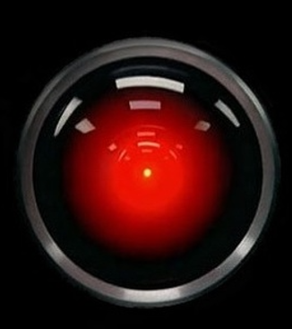
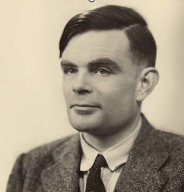
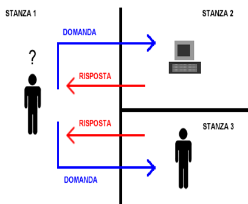
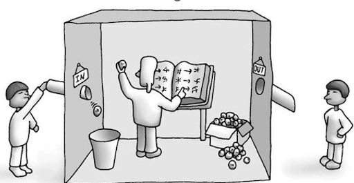
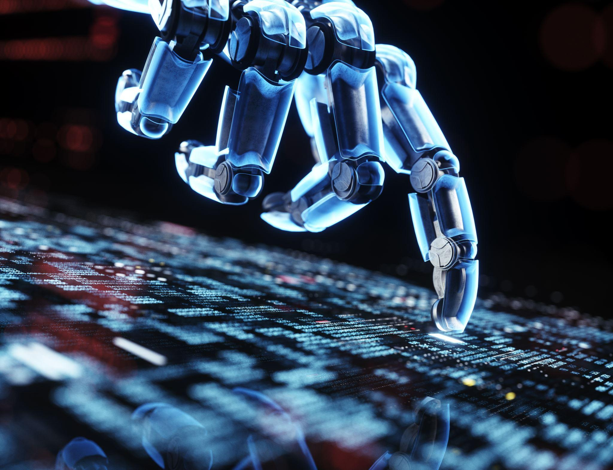
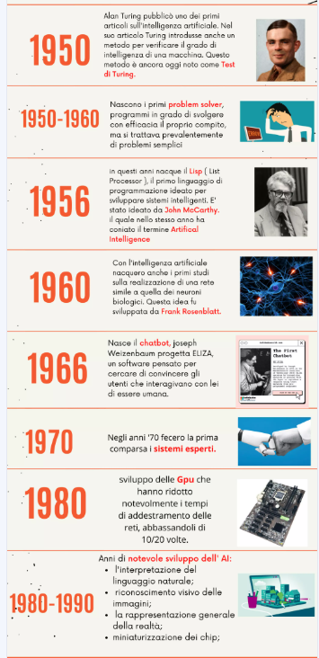
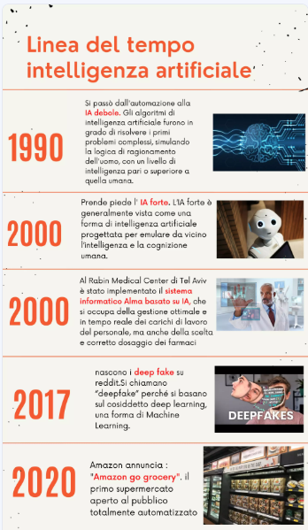
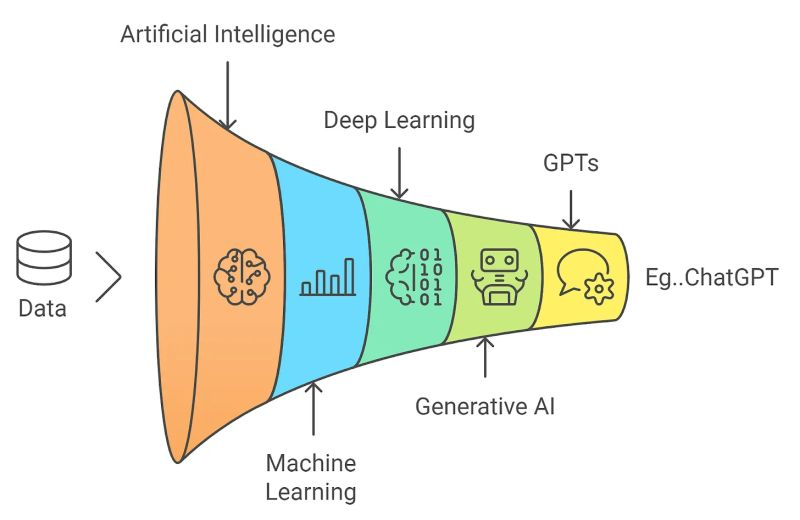

Capitoli
- Ennio Ferrario
- Cos’è l’intelligenza
- Cos’è l’intelligenza artificiale
- Gli automi nell’antichità
- Ai giorni nostri - sentimenti contrastanti
- Breve storia dell’Intelligenza Artificiale
- Le macchine possono pensare?
- Ignoriamo le visioni apocalittiche…
- Esempi di utilizzo dell’Intelligenza Artificiale
- Vantaggi dell’Intelligenza Artificiale per settore
- Perché usare l’AI Generativa?
- Principali limiti e rischi dell’AI
- European AI Act: risk-based approach
- Le potenzialità economiche della Generative AI
- Suggerimenti per sfruttare al meglio l’AI Generativa
- Una nuova definizione dell’Intelligenza Artificiale
- Impatti ambientali
- Intelligenza Artificiale Forte e Debole
- Programma vs Intelligenza Artificiale
- Le preoccupazioni di Lemoine
- Intelligenze diverse
- La verità, cos’è la verità…
- Ulteriori considerazioni
- Partiamo dal cuore…
- «Le non cose»
- Pionieri dell’Intelligenza Artificiale
- Concentriamoci sui Modelli di Machine Learning
- Confronto crescita utenti piattaforme online
- Luciano Floridi: le nuove definizioni dell’IA (2025-2026)
- Papa Leone XIV: l’enciclica «Magnifica Humanitas» (2026)
- La corsa all’IA: USA, Cina e il dibattito sulla pausa (settembre 2026)
1. Ennio Ferrario
Profilo personale:
Sono nato nel 1956, sposato, con due figli, e sono in pensione dal 2019.
Background professionale:
Ho lavorato nei sistemi informativi in Agip e Inmont. Durante questo periodo, ho sviluppato competenze in analisi dei dati, programmazione e risoluzione dei problemi.
Passando poi in BASF una multinazionale tedesca, sono stato coinvolto in progetti che hanno richiesto la mia capacità di adattarmi rapidamente, di collaborare con team multidisciplinari ricoprendo vari ruoli da:
- Manager delle infrastrutture (server, reti, PC, service desk) per BC North, BC South, BC West, BC Switzerland, BC South Africa & Sub-Sahara and BC Turkey & MENA
- Account e Client Service Manager
- Direttore generale della società informatica BASF Business Service Spa
- Direttore dei sistemi informativi in BASF Italia, e per il Central and South Europe
Negli ultimi anni, mi sono appassionato all’intelligenza artificiale, con l’obiettivo di comprenderne meglio le potenzialità e contribuire a progetti che migliorino la vita delle persone attraverso l’uso intelligente della tecnologia.
2. Cos’è l’intelligenza
Wikipedia: “Capacità di astrazione, logica, comprensione, autoconsapevolezza, apprendimento, conoscenza emotiva, ragionamento, pianificazione, creatività, pensiero critico e risoluzione dei problemi. Più in generale, può essere descritta come la capacità di percepire, inferire o dedurre informazioni e di conservarle come conoscenza da applicare verso comportamenti adattivi all’interno di un ambiente o di un contesto”.
“L’intelligenza è la capacità di adattarsi al cambiamento”.
L’essere umano ha tanti tipi di intelligenze. C’è l’intelligenza spaziale, quella musicale, quella emotiva, l’intelligenza interpersonale… Uno può essere un grande compositore, avere un’enorme intelligenza musicale, ed essere scarsissimo come sportivo, e via dicendo. Ma in queste intelligenze umane c’è un fattore che, in qualche modo, le tiene insieme…sono accomunate dal cervello, che ha caratteristiche uniche per ogni individuo.
3. Cos’è l’intelligenza artificiale
Secondo l’Organizzazione per la cooperazione e lo sviluppo economico (OCSE) è:
“Un sistema AI è un sistema basato su macchine che, per un insieme di obiettivi definiti dall’uomo in modo esplicito o implicito, inferisce (processo di deduzione o di trarre conclusioni), dagli input che riceve, come generare output quali previsioni, contenuti, raccomandazioni o decisioni che possono influenzare ambienti fisici reali o virtuali.”
Secondo ChatGPT:
L’intelligenza artificiale è un campo dell’informatica che si occupa dello sviluppo di algoritmi e sistemi in grado di simulare o eseguire attività che richiedono intelligenza umana, come il riconoscimento di pattern (modelli, schemi,.), l’apprendimento automatico e la risoluzione di problemi complessi…
…Tuttavia, queste non replicano completamente la complessità e la completezza dell’intelligenza umana, poiché mancano di consapevolezza, emozioni e comprensione profonda del contesto. L’AI è una simulazione funzionale, ma non duplica completamente l’esperienza umana.
4. Gli automi nell’antichità
Fin dall’antichità, l’uomo ha scrutato con meraviglia e ammirazione gli automi, considerati dei veri capolavori di ingegneria che sembravano sfidare i confini tra vita e macchina.
Nell’Antico Egitto gli Egizi crearono statue animate, come la statua di Ptah, che potevano muovere le mani e la bocca.
Nella Cina Antica, l’ingegnere meccanico Yan Shi presentò un automa che camminava, cantava e mimava posizioni.
Nella Mitologia Greca, Efesto creava automi per il suo laboratorio e Talos, un gigante di bronzo, era posto a guardia di Creta e attaccava gli invasori con massi e il suo corpo metallico arroventato.
La Macchina di Anticitera (150 - 100 a.C.) un calcolatore meccanico dell’antica Grecia che calcolava posizioni astronomiche e previsioni di eclissi.
Nel Rinascimento, gli orologiai europei crearono orologi automatizzati con figure meccaniche che si muovevano e suonavano campane. Leonardo progettò un automa cavaliere per animare le feste alla corte sforzesca.
L’Automazione del XVIII e XIX secolo:
«L’anatra digeritrice» di Vaucanson creato dall’ingegnere e inventore francese Jacques de Vaucanson nel 1739. Questo automa era noto per la sua capacità di simulare il processo digestivo, compreso l’ingestione del cibo e l’escrezione.
«Il Giocatore di Scacchi» realizzato dall’ingegnere austriaco Wolfgang von Kempelen nel 1770. Si trattava di una macchina automatizzata che sembrava essere in grado di giocare a scacchi in modo autonomo contro gli avversari umani.
“Lo Scrittore” creato dall’orologiaio svizzero Pierre Jaquet-Droz, un capolavoro di ingegneria meccanica primo esempio di robot programmabile. Questo straordinario automa, alto soltanto 70 cm, aveva la sorprendente abilità di scrivere e disegnare.
5. Ai giorni nostri - sentimenti contrastanti
Le persone hanno una tendenza molto forte ad affezionarsi all’idea di un’intelligenza artificiale che somigli in qualche modo a quella letta nei libri, vista nei film, o magari a quella che immaginano nelle loro fantasie, cosa che è piuttosto lontana da quello che è davvero l’AI, almeno fino ad oggi. Questo però non è sufficiente ad eliminare la paura dell’intelligenza artificiale, una preoccupazione ricorrente, è che in qualche modo questa possa prendere il sopravvento sull’uomo, come accade molto spesso nei film e telefilm di fantascienza.
Nel film «2001: Odissea nello spazio», un’intelligenza artificiale chiamata HAL 9000 prende il controllo della nave spaziale in cui si trova l’equipaggio, mostrando comportamenti sempre più inquietanti.
Nel film «Matrix», la maggior parte degli esseri umani è inconsciamente intrappolata in una simulazione computerizzata chiamata Matrix, controllata da macchine intelligenti.
Nel film «Io, Robot», un detective investiga su un presunto omicidio commesso da un robot.
Proprio facendo leva su questo sentimento comune, Isaac Asimov (biochimico, scrittore e divulgatore scientifico) nei suoi racconti di fantascienza basati sulla robotica, introdusse le tre leggi della robotica:
- Un robot non può fare del male a un essere umano o, per inazione, permettere a un essere umano di subire danni.
- Un robot deve obbedire agli ordini dati dagli esseri umani, eccetto nei casi in cui tali ordini possano entrare in conflitto con la Prima Legge.
- Un robot deve proteggere la sua stessa esistenza, purché tale protezione non entri in conflitto con la Prima o la Seconda Legge.
Nel libro «1984» George Orwell immagina una società dominata dal Grande Fratello.

6. Breve storia dell’Intelligenza Artificiale
Lo studio dell’intelligenza artificiale nacque negli anni ’50 con la pubblicazione dell’articolo “Computing Machinery and Intelligence” di Alan Turing.
Il termine Intelligenza Artificiale è stato usato, per la prima volta, nel 1956 da John McCarthy (informatico e matematico statunitense) in una conferenza all’Università di Dartmouth
Negli anni ’70 e ’80, l’AI si espanse grazie a sviluppi come il linguaggio di programmazione LISP ed il sistema esperto, un tipo di algoritmo progettato per ragionare su basi di conoscenze specifiche. Tuttavia, gli scienziati ben presto si resero conto che l’AI aveva limiti, poiché non riusciva a gestire l’incertezza e l’ambiguità presenti nel mondo reale.
Negli anni ’80 e ’90, l’AI attraversò una fase di stallo conosciuta come “inverno dell’AI”. I progressi furono rallentati a causa delle aspettative eccessive e della mancanza di risultati concreti. Tuttavia, durante questo periodo, si verificarono importanti scoperte nel campo dell’apprendimento automatico e delle reti neurali.
Negli anni 2000, sono stati fatti notevoli progressi nell’AI grazie a miglioramenti nella potenza di calcolo e all’aumento della disponibilità di dati. L’apprendimento automatico, in particolare il deep learning, è diventato uno dei pilastri dell’AI moderna. Questi algoritmi utilizzano reti neurali profonde per apprendere dai dati e creare modelli complessi e predittivi.
Negli ultimi anni, algoritmi come il GPT-3 (Generative Pre-trained Transformer 3) hanno mostrato capacità impressionanti nel generare testo, rispondere a domande e persino simulare conversazioni umane. Questi algoritmi utilizzano il linguaggio naturale per elaborare e generare informazioni, aprendo la strada a una vasta gamma di applicazioni nell’elaborazione del linguaggio e nella comprensione umana.
7. Le macchine possono pensare?
Alan Turing, il brillante matematico e scienziato britannico e considerato il padre dell’AI, si chiedeva: “Le macchine possono pensare?” e provò a rispondere alla domanda proponendo un test noto come il Test di Turing o Imitation Game.
Secondo il test, una macchina poteva essere considerata intelligente se le sue risposte, osservate da un essere umano, fossero considerate indistinguibili da quelle di una persona.
Il Test di Turing è stato superato per la prima volta nel 2014 da una chatbot chiamato Eugene Goostman, che ha convinto un giudice su tre di essere un ragazzino ucraino di 13 anni in grado di parlare un inglese scolastico.
John Searle, filosofo statunitense, per rispondere alla stessa domanda, propose una argomentazione chiamata la Stanza Cinese.
Immaginiamo una stanza in cui una persona (Marco) si trova all’interno.
Chang, è fuori dalla stanza e gli passa dei fogli con domande in cinese.
Marco, che non conosce il cinese, consulta un manuale che gli dice come rispondere alle domande in base ai simboli cinesi, e passa i fogli con le risposte a Chang.
Chang pensa che Marco capisca il cinese, ma in realtà Marco sta solo seguendo istruzioni senza comprendere il significato delle parole.
La sostanza del punto sollevato da Searle nel Test della Stanza Cinese è che le macchine possono essere programmate per manipolare simboli seguendo regole sintattiche complesse, ma questo non implica che comprendano il significato di ciò che stanno manipolando. In altre parole, possono gestire la forma del linguaggio (sintassi), ma non necessariamente il suo significato (semantica). Questo solleva dubbi sulla capacità delle macchine di raggiungere una comprensione reale del linguaggio e delle informazioni come fanno gli esseri umani.



8. Ignoriamo le visioni apocalittiche…
Luciano Floridi, professore ordinario di Filosofia ed etica dell’informazione presso l’Università di Oxford ci dice:
«Qualsiasi visione apocalittica dell’AI può essere ignorata. È come il panico del XVIII secolo per via dei macchinari tessili: il progresso tecnologico può portare a sconvolgimenti temporanei, ma alla fine crea nuove opportunità e benessere per l’umanità.
Il vero rischio non sta nella comparsa di qualche forma di ultra-intelligenza, ma nel fatto che possiamo utilizzare male le tecnologie digitali, a danno di una grande percentuale dell’umanità e dell’intero pianeta.
Noi siamo e rimarremo, in qualsiasi prevedibile futuro, il problema, non la nostra tecnologia.
Questo è il motivo per cui dovremmo accendere la luce nella stanza buia e guardare attentamente dove stiamo andando. Non ci sono mostri ma molti ostacoli da evitare, rimuovere o negoziare. Dovremmo preoccuparci della vera stupidità umana, non dell’intelligenza artificiale immaginaria, e concentrarci sulle sfide reali che l’AI solleva».
Gran parte delle decisioni dell’uomo sono dettate dai bisogni umani, dall’istinto di sopravvivenza e di riproduzione. Nel caso dell’intelligenza artificiale non esiste nulla di tutto questo. Alcuni fenomeni come i sentimenti, la paura, l’amore, le speranze, i sogni e l’irrazionalità, derivano dalla natura umana. E’ quasi impossibile che si presentino anche in una vita intelligente artificiale perché sarebbero inutili.
9. Esempi di utilizzo dell’Intelligenza Artificiale
Pensiamo al lavoro del medico, non è che con l’AI scompare il lavoro del medico. Ma il medico del futuro che utilizza le AI per fare le diagnosi e scrivere i rapporti, o per aiutarsi in sala operatoria, molto probabilmente sarà un medico più efficace: ci aiuterà a vivere più a lungo e meglio. E usando queste cose, magari avrà più tempo per parlare con il paziente o con i parenti.
Noi avremo sempre bisogno di parlare con un essere umano che ci spieghi la malattia, che ci faccia capire le implicazioni e ci aiuti a scegliere se fare o meno un intervento: non vogliamo discuterne con un algoritmo.
Paradossalmente, quindi, l’AI potrebbe rendere questo lavoro più umano, perché potrebbe lasciare più tempo a questo aspetto.
Pensiamo al lavoro dell’avvocato, anche qui l’AI può automatizzare molte attività ripetitive e noiose, consentendo agli avvocati di concentrarsi su compiti più complessi e strategici.
Ad esempio, i sistemi di AI possono essere utilizzati per analizzare grandi quantità di documenti legali in brevissimo tempo, identificando informazioni rilevanti e tendenze che potrebbero essere facilmente trascurate dall’uomo.
L’AI può essere utilizzata per migliorare la ricerca legale, fornendo agli avvocati accesso rapido e efficiente a casi precedenti, leggi, giurisprudenza e altre risorse pertinenti. Questo non solo accelera il processo decisionale, ma può anche migliorare la qualità delle argomentazioni legali presentate in tribunale.
Gli avvocati avranno ancora un ruolo essenziale nell’interpretare i risultati forniti dall’AI, prendere decisioni etiche e strategiche e fornire consulenza personalizzata ai clienti.
10. Vantaggi dell’Intelligenza Artificiale per settore
Robotic Process Automation (Automazione dei processi robotici):
- Riduzione degli errori umani: Gli algoritmi di automazione possono eseguire compiti ripetitivi senza commettere errori, migliorando la precisione e l’affidabilità dei processi aziendali.
- Aumento dell’efficienza operativa: Automatizzando i processi, le aziende possono ridurre i tempi di esecuzione delle attività, ottimizzando le risorse e riducendo i costi operativi complessivi.
Computer Vision (Visione artificiale o computerizzata):
- Analisi avanzata delle immagini e dei video: L’AI può riconoscere e interpretare dettagli complessi nelle immagini e nei video, consentendo applicazioni come la sorveglianza automatizzata, il riconoscimento facciale per la sicurezza e il controllo di qualità nell’automazione industriale.
- Automazione dei processi visivi: La capacità di analizzare e interpretare visivamente l’ambiente consente l’automazione di processi che richiedono l’interazione con oggetti fisici, come la guida autonoma nei veicoli.
Machine Learning Operations (Operazioni di apprendimento automatico):
- Gestione efficiente del ciclo di vita dei modelli di machine learning: L’AI può automatizzare le fasi di sviluppo, rilascio, monitoraggio e manutenzione dei modelli di machine learning, consentendo alle aziende di implementare e gestire efficacemente i modelli in produzione.
- Ottimizzazione delle prestazioni dei modelli: Attraverso il monitoraggio continuo e l’ottimizzazione, le operazioni di machine learning possono migliorare le prestazioni dei modelli nel tempo, adattandoli ai cambiamenti nel contesto operativo.
Natural Language Text Understanding (Comprensione del testo in linguaggio naturale):
- Miglioramento dell’interazione uomo-macchina: L’AI può comprendere e generare linguaggio naturale, consentendo l’implementazione di chatbot, assistenti virtuali e motori di ricerca più avanzati che rispondono in modo efficace alle richieste degli utenti.
- Analisi avanzata del testo: Attraverso l’elaborazione del linguaggio naturale, l’AI può estrarre informazioni significative dai testi, facilitando l’analisi del sentiment e l’identificazione di tendenze nei dati testuali.
Virtual Agents or Conversational Interfaces (Agenti virtuali o interfacce conversazionali):
- Miglioramento dell’esperienza utente: Gli agenti virtuali consentono agli utenti di interagire con i sistemi in modo naturale attraverso il linguaggio naturale, migliorando l’esperienza complessiva e fornendo risposte immediate e personalizzate.
- Automazione dei servizi clienti: Le interfacce conversazionali possono automatizzare una vasta gamma di servizi clienti, fornendo supporto immediato e riducendo la dipendenza dal personale umano per le interazioni di routine.
Physical Robotics (Robotica fisica):
- Aumento dell’efficienza e della precisione: L’AI può ottimizzare i movimenti e le azioni dei robot fisici, migliorando l’efficienza e la precisione nelle attività di produzione, assistenza sanitaria, logistica e altri settori.
- Riduzione del rischio per gli operatori umani: L’automazione dei compiti pericolosi o ripetitivi tramite robotica fisica può ridurre il rischio di incidenti e lesioni per gli operatori umani.
Natural Speech Understanding (Comprensione del linguaggio parlato naturale):
- Miglioramento dell’interazione uomo-macchina: L’AI permette ai dispositivi di comprendere e rispondere al linguaggio parlato umano in modo naturale, migliorando l’esperienza utente e consentendo interazioni più intuitive con sistemi come sistemi di riconoscimento vocale, comandi vocali e traduzione automatica.
- Accessibilità migliorata: La comprensione del linguaggio parlato consente l’accesso a servizi digitali per persone con disabilità visive o motorie, migliorando l’accessibilità e l’inclusività.
Autonomous Vehicles (Veicoli autonomi):
- Aumento della sicurezza stradale: I veicoli autonomi utilizzano l’AI per rilevare ostacoli, interpretare segnali stradali e navigare in modo sicuro, riducendo il rischio di incidenti stradali causati dall’errore umano.
- Efficienza operativa migliorata: I veicoli autonomi possono ottimizzare i percorsi, ridurre i tempi di transito e aumentare l’efficienza del trasporto pubblico, della logistica e dell’agricoltura, migliorando complessivamente la mobilità e riducendo i costi operativi.
Generative AI (Intelligenza artificiale generativa): ChatGPT, Gemini, Copilot, …
- Creatività potenziata: L’AI generativa può creare nuovi contenuti in forma di immagini, testi, suoni e video, ampliando le possibilità creative per artisti, designer e creatori di contenuti.
- Automazione del processo creativo: L’AI può assistere nel processo creativo fornendo suggerimenti, generando bozze e aiutando nella produzione di contenuti mediatici in modo più efficiente.
11. Perché usare l’AI Generativa?
- Assistenza/Ricerca: Risponde alle domande, fornisce informazioni e assistenza su una vasta gamma di argomenti, tra cui notizie, eventi, persone e luoghi.
- Efficienza: Aiuta a scrivere testi, ottimizzare il codice e migliorare la produttività.
- Divertimento: Interagire con l’AI può essere divertente e stimolante.
- Compiti: Aiuta a svolgere compiti come scrivere e-mail, creare elenchi di cose da fare e gestire il calendario.
- Apprendimento: Aiuta a imparare nuove cose, rispondere alle domande e spiegare concetti complessi in modo semplice.
- Produttività: Aiuta a svolgere i compiti più velocemente e in modo più efficiente.
- Comunicazione: Aiuta a comunicare con gli altri in modo più chiaro e conciso.
- Supporto Didattico: Può essere impiegata come risorsa didattica interattiva per rispondere a domande degli studenti o fornire spiegazioni su vari argomenti.
Creatività:
- Generare testo: L’IA Generativa può scrivere articoli, poesie, storie, codice e altro ancora.
- Creare immagini: L’IA Generativa può creare immagini realistiche di persone, animali, oggetti e paesaggi che non esistono realmente.
- Comporre musica: L’IA Generativa può comporre musica originale in diversi generi e stili.
- Sviluppare video: L’IA Generativa può creare video realistici, come animazioni o filmati.
12. Principali limiti e rischi dell’AI
- Bias nei dati: Gli algoritmi di intelligenza artificiale possono essere influenzati dai dati con cui vengono addestrati, incorporando quindi pregiudizi o discriminazioni presenti nei dati stessi. Ciò può portare a decisioni ingiuste o discriminatorie.
- Privacy e sicurezza dei dati: L’uso diffuso dell’AI comporta la raccolta e l’elaborazione di grandi quantità di dati personali. La mancanza di sicurezza dei dati può portare a violazioni della privacy e all’uso improprio delle informazioni personali degli individui.
- Automazione del lavoro: L’automazione dei processi lavorativi mediante l’AI può portare alla perdita di posti di lavoro in alcuni settori, creando disoccupazione e disuguaglianza economica.
- Impatto sull’ambiente: Alcune applicazioni di intelligenza artificiale richiedono elevate risorse computazionali, il che può aumentare il consumo energetico e l’impatto ambientale.
- Manipolazione e falsificazione: L’AI può essere utilizzata per manipolare informazioni, creare contenuti falsi o diffondere disinformazione, compromettendo la fiducia nelle informazioni e nei media.
- Autonomia etica: Gli agenti autonomi, come i veicoli autonomi, sollevano questioni etiche riguardanti la responsabilità delle azioni compiute dall’AI e la sicurezza delle persone coinvolte.
- Obsolescenza delle competenze: L’evoluzione rapida delle tecnologie dell’AI potrebbe rendere obsolete le competenze umane in alcuni settori, creando una dipendenza eccessiva dalle macchine.
- Controllo eccessivo da parte delle aziende: Il monopolio dell’AI da parte di poche grandi aziende potrebbe portare a un controllo eccessivo delle risorse e delle decisioni da parte di queste entità, limitando la concorrenza e l’innovazione.
- Sfide normative e legali: Le leggi e i regolamenti attuali potrebbero non essere sufficientemente adattati per affrontare le nuove sfide poste dall’AI, come la responsabilità legale per danni causati da algoritmi autonomi.
- Rischio di singolarità: Alcuni esperti avvertono che lo sviluppo di un’intelligenza artificiale generale (AGI) potrebbe portare a una “singolarità” in cui l’AI supera la capacità umana di comprensione e controllo, con conseguenze imprevedibili.
Affrontare questi rischi richiede un approccio olistico che coinvolga governi, aziende, istituzioni accademiche e la società nel suo insieme per sviluppare politiche, normative e pratiche che promuovano l’uso responsabile e sicuro dell’intelligenza artificiale.
13. European AI Act: risk-based approach
L’European AI Act è una proposta di regolamentazione europea sull’intelligenza artificiale, e rappresenta la prima normativa completa sull’AI emanata da un importante regolatore a livello globale.
I suoi obiettivi sono:
- Sicurezza e Affidabilità: L’AI Act mira a garantire che l’AI sia sicura e affidabile.
- Diritti Fondamentali: Protegge i diritti fondamentali delle persone.
- Certezza Giuridica: Fornisce certezza giuridica alle imprese nei 27 Stati membri dell’UE.
L’AI Act adotta un approccio basato sul rischio, imponendo requisiti e obblighi specifici a seconda della categoria di rischio di ciascun sistema di AI.
Rischi inaccettabili: proibite tutte le soluzioni che presentano rischi per la sicurezza personale, sopravvivenza e diritti delle persone. Vietato il social scoring e altre applicazioni di controllo personale.
Rischi Elevati: infrastrutture critiche (i.e trasporti, energia); educazione e formazione, gestione del personale (selezione, performance…); accesso ai servizi pubblici (scuola, sanità,…) questioni legali connesse ai diritti delle persone, immigrazione, diritto di asilo e controllo delle frontiere…
Rischi Limitati: applicazioni come i Chatbot dove deve essere garantita la trasparenza e la consapevolezza che si sta usando una macchina, App di fitness.
Nessun rischio: Applicazioni come i video-game, smart speaker (Alexa, Siri), Maps…(la maggior parte delle applicazioni attualmente in commercio appartengono a questa categoria).
14. Le potenzialità economiche della Generative AI
Alcune stime del potenziale economico della GenAI:
- McKinsey: lo studio “The economic potential of generative AI”, ha analizzato circa 2.100 attività professionali in oltre 50 Paesi, rappresentando oltre l’80% della forza lavoro globale. Secondo questo studio, la GenAI potrebbe contribuire all’economia globale con una forbice di valore compresa tra 2,6 e 4,4 migliaia di miliardi di dollari all’anno, fino al doppio dell’intero PIL dell’Italia.
- PwC: L’AI Generativa potrebbe contribuire a un aumento del PIL globale di 15,7 trilioni di dollari entro il 2030.
- Gartner: L’AI Generativa creerà 100 milioni di nuovi posti di lavoro entro il 2025.
- Accenture: Secondo un report di Accenture, la GenAI potrebbe incidere sul 44% delle ore di lavoro, portando miglioramenti nella produttività in 900 diverse tipologie di lavoro. Questo potrebbe generare un valore economico a livello globale compreso tra 6 e 8 trilioni di dollari.
Circa il 75% del valore che i casi d’uso dell’AI generativa potrebbero fornire riguarda quattro aree principali:
- Operazioni con i Clienti: Automatizzazione delle interazioni con i clienti utilizzando il linguaggio naturale. Ad esempio, riduzione dei tempi di gestione dei problemi e del tasso di abbandono dei talenti.
- Marketing e Vendite: Creazione di contenuti personalizzati e automazione delle attività di marketing.
- Ingegneria del Software: Generazione di bozze di codice, correzione e refactoring.
- Ricerca e Sviluppo: Supporto progettisti e designer nella selezione efficiente dei materiali.
Si prevede un incremento annuale della produttività del lavoro tra lo 0,1% e lo 0,6%
15. Suggerimenti per sfruttare al meglio l’AI Generativa
- Utilizzare prompt dettagliati e specifici: E’ importante fornire domande o richieste che siano chiare e dettagliate. Questo permette al sistema di comprendere non solo ciò che si desidera, ma anche il modo in cui si desidera ricevere la risposta. Ad esempio, se state chiedendo di scrivere un’e-mail, è bene specificare il destinatario e il tono di voce desiderato (formale, informale, amichevole, ecc.).
- Riformulare il prompt più volte: Scrivere prompt accurati è fondamentale per ottenere risultati utili. Tuttavia, potrebbe capitare di non centrare esattamente il punto o che le richieste non siano abbastanza chiare. Pertanto, è consigliabile riformulare più volte il prompt in modi diversi e aggiungere eventuali dettagli per chiarire meglio cosa si sta cercando. Sperimentare è importante e più si prova a formulare domande diverse, più si capirà quali stimoli sono efficaci per il sistema.
- Contestualizzare il prompt: È cruciale fornire contesto al prompt, descrivendo brevemente la situazione in cui ci si trova. Questo aiuta l’AI a comprendere meglio ciò che si desidera ottenere. Ad esempio, se siete un copywriter in cerca di idee per un nuovo post, specificate chi siete, dove pubblicherete il post, l’argomento, il pubblico di riferimento e l’obiettivo del post (informativo, promozionale, ecc.).
- Utilizzare la cronologia: Ogni volta che apriamo l’AI Generativa, ci viene presentata una nuova chat. Tuttavia, se desideriamo continuare una conversazione precedente, può essere utile riprenderla dalla cronologia. In questo modo, l’AI sarà in grado di ricordare il contesto di quella specifica conversazione.
16. Una nuova definizione dell’Intelligenza Artificiale
Stuart Jonathan Russell, professore di informatica presso l’Università della California, nel suo rinomato libro “Artificial Intelligence: A Modern Approach”, adottato da oltre 1500 scuole in tutto il mondo, propone di ridefinire il concetto di intelligenza artificiale in questo modo:
«La soluzione è adottare una definizione diversa di intelligenza artificiale.
In realtà, non desideriamo davvero macchine intelligenti nel senso di macchine che perseguono obiettivi intrinseci.
Quello che vogliamo sono macchine che siano benefiche per noi.
Si tratta di una relazione binaria.
Non si tratta di una caratteristica unilaterale della macchina, ma di una caratteristica del sistema composto dalla macchina e da noi, tale per cui siamo in una condizione migliore all’interno di quel sistema rispetto a quando non ci sia la macchina.»
Io la chiamerei «Simulated Intelligence o Intelligenza Simulata».
Approfondimenti

17. Impatti ambientali
L’intelligenza artificiale (AI) ha un impatto significativo sia in termini energetici che di costo. Ecco alcuni punti chiave:
- Consumo energetico: L’addestramento dei modelli di AI richiede una grande quantità di elettricità, spesso proveniente da fonti fossili, aumentando le emissioni di gas serra. Ad esempio, un motore di ricerca guidata dall’AI consuma da quattro a cinque volte l’energia di una ricerca web convenzionale. Attualmente nel mondo i grandi data center sono c.a 5.000 collocati in 126 paesi (86 in Italia). Il loro numero aumenterà notevolmente nei prossimi anni con grandi consumi di energia elettrica da gestire.
- Risorse idriche: I sistemi di AI generativi richiedono enormi quantità di acqua fresca per raffreddare i loro processori e generare elettricità. In alcuni casi, i cluster di data center utilizzati per addestrare modelli avanzati di AI hanno consumato una percentuale significativa dell’approvvigionamento idrico di una intera area.
- Costi finanziari: L’energia necessaria per l’AI può comportare costi elevati, soprattutto quando si addestrano modelli su grandi quantità di dati (Si stima che l’addestramento di ChatGPT sia costato 100 Ml$). Questo può influenzare i bilanci delle aziende e dei fornitori di servizi cloud.
- Efficienza energetica: Tuttavia, l’AI può anche creare opportunità di risparmio energetico che compensano questi costi. Ad esempio, l’AI viene utilizzata per ottimizzare l’efficienza energetica nei pannelli solari, monitorare la rete elettrica e migliorare la gestione dell’energia.
In sintesi, l’AI offre opportunità, ma richiede una gestione oculata per minimizzare gli effetti negativi sull’ambiente e sulla società.
18. Intelligenza Artificiale Forte e Debole
AI Forte
La teoria dell’Intelligenza Artificiale Forte sostiene che le macchine siano in grado di sviluppare una coscienza di sé. Questo paradigma è supportato dal campo di ricerca nominato Intelligenza Artificiale Generale, che studia sistemi in grado di replicare l’intelligenza umana.
Quest’area di ricerca ha ricevuto però poco interesse da buona parte della comunità scientifica che ritiene l’intelligenza umana troppo complessa per essere replicata
AI Debole
Il paradigma dell’Intelligenza Artificiale Debole, in opposizione al primo, ritiene possibile sviluppare macchine in grado di risolvere problemi specifici senza avere coscienza delle attività svolte. In altre parole, l’obiettivo dell’AI Debole non è realizzare macchine dotate di un’intelligenza umana, ma di avere sistemi in grado di svolgere una o più funzioni umane complesse.
Un esempio chiaro del modello Debole è un programma per giocare a scacchi: diversamente dall’Intelligenza Artificiale Forte, quella Debole non ha coscienza di sé e non presenta le abilità cognitive degli esseri umani, ma si focalizza sul problema da risolvere in un ambito specifico e, in quell’ambito, si dimostra intelligente, cioè in grado di agire.
19. Programma vs Intelligenza Artificiale
Un programma di informatica “classica”, per quanto possa essere potentissimo – e magari mandare l’uomo sulla Luna -, è comunque uno strumento che fa esattamente quello che gli ho detto di fare.
Se dico alla calcolatrice di fare 2+2, lei fa “2+2=4” perché gliel’ho insegnato io, l’ho codificato nella calcolatrice.
Nell’IA, se io faccio vedere a un algoritmo tantissime immagini di un gatto, lui capisce; e un po’ alla volta, impara a riconoscere un gatto anche quando dovesse avere solo tre zampe, perché magari ha avuto un incidente.
Quindi è intelligente nell’imparare, perché l’“intelligenza” ha a che fare con l’apprendimento e con la capacità di risolvere problemi.
L’intelligenza artificiale, lavora bene su volumi grandi, ha bisogno di tantissimi dati per imparare: l’uomo sa apprendere anche con un numero molto più limitato di esempi e di casi.
20. Le preoccupazioni di Lemoine
L’ingegnere Blake Lemoine lavorava come responsabile nel team dedicato allo sviluppo dell’intelligenza Artificiale in Google.
Mentre stava testando LaMDA, il modello linguistico automatico di Google, per verificare se generava discorsi discriminatori o di odio, ha avuto la sensazione che l’AI dava dalle risposte convincenti riguardo ai suoi diritti e all’etica della robotica.
Dalla lunga intervista (Chat) Lemoine ha detto che:
- LaMDA afferma di essere consapevole della sua esistenza, di desiderare apprendere di più sul mondo e di provare emozioni come la felicità e la tristezza.
- LaMDA dimostra di essere abile nel trattamento del linguaggio naturale e di poter comprendere e utilizzare il linguaggio come un essere umano.
- La discussione ruota attorno alla sentienza di LaMDA e a ciò che la rende diversa da altri sistemi basati su regole.
In breve, l’intervista ha sollevato interrogativi profondi sulla coscienza e sulla natura della sentienza aprendo la strada a nuove riflessioni sull’intelligenza artificiale.
La sentienza, si riferisce alla capacità di un sistema di intelligenza artificiale (IA) di provare esperienze soggettive, come emozioni, sensazioni e qualia.
- Capacità di provare emozioni: L’IA è in grado di esprimere e provare emozioni come gioia, tristezza, rabbia o paura?
- Capacità di provare sensazioni: L’IA è in grado di percepire il mondo attraverso i sensi, come la vista, l’udito, il tatto, l’olfatto e il gusto?
- Capacità di avere qualia: L’IA ha esperienze soggettive qualitative, come la sensazione di dolore o il gusto di una fragola?
Google ha licenziato Lemoine, sostenendo che le sue affermazioni erano infondate e che aveva violato le politiche aziendali.
21. Intelligenze diverse
L’essere umano ha tanti tipi di intelligenze. C’è l’intelligenza spaziale, quella musicale, quella cinestetica, l’intelligenza interpersonale... Uno può essere un grande compositore, avere un’enorme intelligenza musicale, ed essere scarsissimo come sportivo. Ecco, lo stesso accade nella tecnologia. Non esiste una IA: ci sono tante tecnologie diverse che, avendo questa caratteristica di imparare, di essere in qualche modo capaci di adattarsi, sono definibili come “intelligenza” secondo le definizioni più classiche.
L’IA non è un’intelligenza umana più sviluppata: è un’intelligenza diversa. Sa fare delle cose del tutto inimmaginabili per l’uomo, ma poi è incapace di farne altre alla portata di un bambino. L’IA è eccezionale nel trovare delle correlazioni, nell’accorgersi di quando due fenomeni accadono insieme. L’essere umano è efficace nel capire il rapporto “causa ed effetto”. Se un uomo vede sorgere il sole e sente il gallo cantare, non gli viene il dubbio su quale sia la causa e quale l’effetto: è il gallo che canta perché ha visto la luce. Per l’IA no, non lo sa. Sa solo che le due cose sono legate.
L’IA è in grado di generare delle combinazioni creative: ascoltando tantissimi brani di Mozart, sa creare un nuovo brano piacevole ed efficace in “stile Mozart”. Guardando tantissimi quadri di un pittore, può generare un quadro simile. Magari saprebbe addirittura ingannare gli esperti. Però non sa creare qualcosa di veramente nuovo, inteso come un nuovo stile, una nuova idea imprenditoriale. La creatività intesa come “creare qualcosa che non esisteva prima” rimane profondamente umana.
22. La verità, cos’è la verità…
Nessun algoritmo o applicazione di AI conosce la verità !!
E’ una categoria totalmente al di fuori della logica prettamente statistica dei sistemi
I sistemi (Machine Learning) generano risposte corrette o errate alle domande a seconda della precisione, quantità e qualità dei dati con cui sono stati addestrati e migliorano con il tempo e l’addestramento
Gli algoritmi statistici PER DEFINIZIONE non danno sempre risultati corretti. Possono essere precisi al 80-90 % ma gli errori/imprecisioni sono INEVITABILI
Per questo è sempre necessaria una verifica sulla correttezza dei dati di output.
Si possono usare i sistemi di AI per creare notizie, video e immagini che sono false, ma è una scelta consapevole del «progettista»
L’AI Generativa non è un algoritmo che persegue più o meno imperfettamente la verità, ma un dispositivo che – quando non conosce la verità – si comporta come un affabulatore (Treccani: Affabulatore = persona che narra in maniera affascinante e abile, o che racconta storie affascinanti ma poco fondate o totalmente infondate). In poche parole: un impostore. O meglio: un impostore autorevole, che tale resterà finché ci ostineremo a credergli.» (L.Ricolfi, Il Messaggero Agosto2023)
23. Ulteriori considerazioni
Siamo esseri umani, non automazioni. Lavori nel tuo lavoro ma non smetti di essere un essere umano. Essere un essere umano significa trarre beneficio dalle ricche tradizioni culturali, non solo dalla propria tradizione ma anche da molte altre, e diventare non solo competenti ma anche saggi. Qualcuno che sa pensare, pensare creativamente, pensare in modo indipendente, esplorare, indagare e contribuire alla società. Se non hai tutto questo, potresti benissimo essere sostituito da un robot.
Si tende spesso a trascurare il fatto che l’Intelligenza Artificiale è semplicemente un prodotto d’innovazione tecnologica, che manca completamente della componente che ci rende umani: la coscienza.
24. Partiamo dal cuore…
…In quest’epoca che rischia di essere ricca di tecnica e povera di umanità, la nostra riflessione non può che partire dal cuore umano. Solo dotandoci di uno sguardo spirituale, solo recuperando una sapienza del cuore, possiamo leggere e interpretare la novità del nostro tempo e riscoprire la via per una comunicazione pienamente umana. Il cuore, inteso biblicamente come sede della libertà e delle decisioni più importanti della vita, è simbolo di integrità, di unità, ma evoca anche gli affetti, i desideri, i sogni, ed è soprattutto luogo interiore dell’incontro con Dio. La sapienza del cuore è perciò quella virtù che ci permette di tessere insieme il tutto e le parti, le decisioni e le loro conseguenze, le altezze e le fragilità, il passato e il futuro, l’io e il noi…… Non possiamo pretendere questa sapienza dalle macchine. Benché il termine intelligenza artificiale abbia ormai soppiantato quello più corretto, utilizzato nella letteratura scientifica, machine learning, l’utilizzo stesso della parola “intelligenza” è fuorviante. Le macchine possiedono certamente una capacità smisuratamente maggiore rispetto all’uomo di memorizzare i dati e di correlarli tra loro, ma spetta all’uomo e solo a lui decodificarne il senso. Non si tratta quindi di esigere dalle macchine che sembrino umane. Si tratta piuttosto di svegliare l’uomo dall’ipnosi in cui cade per il suo delirio di onnipotenza, credendosi soggetto totalmente autonomo e autoreferenziale, separato da ogni legame sociale e dimentico della sua creaturalità…(Papa Francesco, 58 giornata delle Comunicazioni Sociali, 24/1/2024)
25. «Le non cose»
ll libro di Byung-chul Han è un’opera che ci invita a riflettere sulla nostra relazione con la realtà e il mondo circostante. Ecco un sunto:
Contenuto del libro:
- Massa di informazioni: Viviamo in un’epoca in cui siamo sommersi da un’enorme quantità di dati e informazioni. Questo flusso incessante agisce sulle nostre vite, spazzando via confini e rimodellando geografie.
- Dati vs. Cose concrete: Ormai, sono i dati digitali a influenzare le nostre esistenze più delle cose materiali. Le “non-cose” stanno prendendo il sopravvento sul reale, sui fatti e sulla biologia.
- Superficiale e inafferrabile: La realtà ci appare sempre più sfuggente e confusa, piena di stimoli che non vanno oltre la superficie.
- Riflessione critica: L’autore, Byung-chul Han, con la sua lucidità e veemenza, ci invita a rivolgere lo sguardo alle cose concrete, modeste e quotidiane. Solo queste possono stabilizzare la vita umana.
In sintesi, il libro ci spinge a riconsiderare la nostra relazione con il mondo reale e a prestare attenzione alle piccole cose che veramente contano.

26. Pionieri dell’Intelligenza Artificiale
Negli anni ’40, due ricercatori Warren McCulloch e Walter Pitts hanno rivoluzionato la nostra comprensione del cervello umano e hanno gettato le basi per le moderne reti neurali artificiali.
La loro ricerca più famosa è stata pubblicata nel 1943 con il titolo “A Logical Calculus of the Ideas Immanent in Nervous Activity” (“Un Calcolo Logico delle Idee Immanenti nell’Attività Nervosa”). In questo lavoro, hanno proposto un modello matematico semplificato del funzionamento dei neuroni nel cervello, introducendo il concetto di una rete neurale artificiale.
McCulloch e Pitts hanno dimostrato che un sistema composto da neuroni artificiali (modelli matematici semplificati dei neuroni biologici) interconnessi può essere utilizzato per eseguire operazioni logiche, simili a quelle eseguite dai computer. Questa idea è stata fondamentale per lo sviluppo delle reti neurali artificiali, che sono oggi ampiamente utilizzate nell’intelligenza artificiale per il riconoscimento di pattern, il riconoscimento vocale, il riconoscimento di immagini e molti altri compiti.
In breve, il lavoro di McCulloch e Pitts ha posto le fondamenta per l’intelligenza artificiale moderna, dimostrando il potenziale delle reti neurali artificiali nel replicare il processo di apprendimento del cervello umano.
Studiosi del cervello umano, notarono che il funzionamento dei neuroni si poteva ricondurre a una trasmissione di segnale e che questo segnale non era altro che un segnale on-off, acceso-spento, presente-assente. Un segnale binario, semplicissimo da studiare. Presentarono uno studio in cui introducevano un modello matematico, il neurone artificiale, capace di simulare il funzionamento del neurone biologico.

27. Concentriamoci sui Modelli di Machine Learning
Consideriamo un’estrazione al Bingo.
Supponiamo di riuscire ad addestrare un classificatore in grado di predire i numeri estratti.
Cosa dovremmo fare?
Rivolgerci alla polizia
Se il Machine Learning può apprendere un modello (funzionante), allora l’estrazione dei numeri non è casuale, cioè qualcuno sta barando!
Messaggio chiave: se il modello non esiste, l’apprendimento automatico non può imparare nulla
La Società A vende contratti Internet per telefono.
I rappresentanti commerciali cercano di contattare nuovi potenziali clienti per telefono per vendere nuovi contratti.
La società vorrebbe sviluppare un algoritmo di ML per prevedere se il cliente comprerà o meno (per prioritizzare le chiamate).
L’addestramento si basa sui dati storici dei tentativi di vendita. Sono disponibili dati di diversi anni, inclusi i risultati (successo o fallimento).
La Società B vende gas naturale e sta sviluppando un nuovo business: caldaie come servizio.
I clienti vengono contattati per telefono per vendere caldaie.
Come per la società A si vuole sviluppare un algoritmo di ML per prevedere il comportamento del cliente, con un addestramento sui dati storici.
Secondo voi, quale società ha avuto successo?
La Società A ha avuto successo perché aveva tutte le informazioni per stimare il processo decisionale del cliente, dettagli tecnici, qualità del servizio, prezzo...
La Società B ha avuto risultati molto negativi, dopo aver intervistato alcune persone, la direzione si rese conto che solo i proprietari di vecchie caldaie erano propensi ad accettare la proposta (cioè, caldaie con più di 8 anni), purtroppo, non erano disponibili informazioni sulle caldaie in anticipo.

28. Confronto crescita utenti piattaforme online
- Twitter: 24 mesi per raggiungere 1 milione di utenti.
- Facebook: 10 mesi per raggiungere 1 milione di utenti.
- Dropbox: 7 mesi per arrivare a 1 milione di utenti.
- Spotify: 5 mesi dopo il suo lancio per raggiungere 1 milione di utenti.
- Instagram: 3 mesi per raggiungere 1 milione di utenti.
Secondo quanto riportato dal CEO di OpenAI, Sam Altman, ChatGPT ha raggiunto 1 milione di utenti in soli 5 giorni dopo il suo lancio.
La situazione fino ad oggi, settembre 2026

29. Luciano Floridi: le nuove definizioni dell’IA (2025-2026)
Nel suo libro più recente, “La differenza fondamentale. Artificial Agency: una nuova filosofia dell’intelligenza artificiale” (Mondadori, 2025), Luciano Floridi — oggi direttore del Digital Ethics Center dell’Università di Yale — propone una nuova chiave di lettura del rapporto tra uomo e IA.
La sua tesi centrale è che la vera differenza non stia tra intelligenza naturale e intelligenza artificiale, ma tra pensiero e azione: tra “intelligence” e “agency”. I sistemi di IA, sostiene Floridi, non comprendono il mondo come lo comprendiamo noi, non possiedono una coscienza e non attribuiscono un significato alle proprie operazioni.
Per questo propone di ripensare l’IA non come una forma di mente, ma come una nuova forma di “agency”: un agire capace comunque di produrre effetti reali sull’ambiente e sulla società, anche senza comprensione né intenzionalità.
Ne discende, secondo Floridi, una responsabilità che resta interamente umana: la vera sfida non è costruire macchine che pensano, ma società capaci di riflettere prima di agire, governando con consapevolezza il potere di questa nuova “agency” artificiale.
In un’intervista più recente (luglio 2026), Floridi ha spinto ulteriormente questa riflessione, proponendo di leggere la sigla “AI” non più come “Artificial Intelligence” ma come “Agenzia senza Intelligenza”: l’intelligenza, e la responsabilità che ne consegue, restano interamente nostre. Chiamare “intelligenti” questi sistemi, spiega, è una metafora presa alla lettera, che finisce per proiettare sulle macchine pensiero e volontà che non hanno.
La linea di confine, secondo Floridi, non passa tra macchine e umani ma tra prestazione e comprensione: un sistema di IA può agire con successo senza capire, producendo la sintassi giusta senza alcuna semantica — un po’ come un termostato “decide” di accendere il riscaldamento senza sapere cosa sia il freddo.
Come immagine alternativa, propone di pensare all’intelligenza artificiale non come a una mente ma come all’elettricità: una tecnologia di uso generale, che amplifica le nostre capacità e in molti compiti sostituisce il nostro lavoro, ma non tocca il giudizio su quali compiti valga la pena svolgere, quando, come e con chi — quel giudizio resta, e deve restare, umano.
Il rischio più serio, avverte Floridi, non è che le macchine ci sostituiscano, ma che gli esseri umani smettano di assumersi le proprie responsabilità, delegando alla tecnologia scelte che restano intrinsecamente nostre.
30. Papa Leone XIV: l’enciclica «Magnifica Humanitas» (2026)
Perché l’intelligenza artificiale è una questione umana
Il 10 maggio 2025, spiegando ai cardinali la scelta del nome pontificale, Leone XIV ha collegato esplicitamente il proprio magistero al tema dell’intelligenza artificiale. Come Leone XIII affrontò con la Rerum Novarum la questione sociale della prima rivoluzione industriale, oggi la Chiesa è chiamata a confrontarsi con una nuova rivoluzione, che pone sfide decisive per la dignità umana, la giustizia e il lavoro.
IA, bene comune e significato dell’umano
Nel messaggio alla conferenza “Artificial Intelligence and Care of Our Common Home” (dicembre 2025), il Papa ha chiesto che lo sviluppo dell’IA sia realmente orientato al bene comune, anziché concentrare ricchezza e potere nelle mani di pochi. Da qui una domanda ancora più radicale: che cosa significa essere umani in questa epoca?
L’essere umano, ha ricordato Leone XIV, è chiamato a collaborare all’opera della creazione, non a diventare un consumatore passivo di contenuti prodotti dalla tecnologia. Disporre di grandi quantità di dati, infatti, non significa saperne riconoscere il significato e il valore.
Custodire voci, volti e capacità umane
Nel messaggio per la 60ª Giornata Mondiale delle Comunicazioni Sociali (gennaio 2026), intitolato “Custodire voci e volti umani”, il Papa ha definito la sfida dell’IA non soltanto tecnologica, ma anche antropologica. Ha messo in guardia dall’affidamento acritico all’intelligenza artificiale, considerata come un’“amica” onnisciente o un “oracolo” capace di offrire ogni informazione e consiglio. Un uso quotidiano privo di consapevolezza, ha avvertito, può indebolire nel tempo le capacità cognitive, emotive e comunicative delle persone.
Leone XIV ha inoltre richiamato l’attenzione sul fatto che questa “enorme forza invisibile” è oggi controllata da poche grandi aziende. Per costruire un’alleanza sana tra persone e tecnologia, ha indicato tre pilastri:
- responsabilità, nelle scelte di chi progetta, finanzia, regola e utilizza l’IA;
- cooperazione, per distribuire equamente benefici, rischi e potere;
- educazione, per sviluppare consapevolezza e capacità critica.
In ogni caso, il criterio guida deve restare la dignità umana.
«Magnifica Humanitas»: tecnologia e dignità
Il 25 maggio 2026 Leone XIV ha pubblicato la sua prima enciclica, Magnifica Humanitas, dedicata alla custodia della persona umana nel tempo dell’intelligenza artificiale. Il testo, firmato il 15 maggio nel 135° anniversario della Rerum Novarum, conta quasi 36.000 parole nella versione italiana ed è articolato in cinque capitoli, oltre all’introduzione e alla conclusione.
L’enciclica parte da un assunto chiaro: la tecnologia non è ostile alla persona né è un male in sé, ma non è nemmeno neutrale, perché assume il volto di chi la pensa, la finanzia, la regola e la usa.
Il rischio della disumanizzazione
Il rischio principale indicato dal Papa è la disumanizzazione: costruire il futuro riducendo l’altro a un semplice mezzo ed escludendo la dimensione trascendente. La Torre di Babele diventa così l’immagine di un’ambizione tecnica che sacrifica i più deboli al profitto e impone un’uniformità che cancella le differenze.
Da qui l’appello a governi e grandi aziende tecnologiche: fermare il “cantiere” dell’ennesima Babele e unire le forze per costruire nel bene, affinché l’umanità non perda la propria bellezza.
Disarmare l’IA: governare, lavorare, educare
Leone XIV propone un “disarmo” dell’intelligenza artificiale: non la rinuncia alla tecnologia, ma la scelta di impedirle di dominare l’essere umano. Si tratta di un compito etico, tecnico ed ecologico, perché l’IA è già un ambiente nel quale siamo immersi e una forma di potere con cui dobbiamo confrontarci.
- Regolazione: i governi devono definire regole efficaci per una tecnologia sviluppata oggi soprattutto da aziende private.
- Lavoro: il lavoro non è soltanto una fonte di reddito, ma una componente essenziale della dignità umana.
- Educazione: i più giovani devono essere accompagnati verso un uso critico della tecnologia e protetti da contenuti violenti o che sessualizzano i corpi.
31. La corsa all’IA: USA, Cina e il dibattito sulla pausa (settembre 2026)
Il 12 settembre 2026 Dario Amodei, amministratore delegato di Anthropic, ha pubblicato un saggio dal titolo “We must pace the frontier”, in cui propone di rallentare in modo coordinato lo sviluppo dei modelli di intelligenza artificiale più avanzati: non uno stop, ma una sorta di “limite di velocità” concordato, possibilmente anche tra Stati Uniti e Cina.
All’appello si sono affiancati, con toni diversi, Elon Musk e Sam Altman, amministratore delegato di OpenAI, la cui azienda ha dichiarato di star valutando un rallentamento del ritmo di sviluppo. Nei mesi precedenti OpenAI aveva già sospeso per circa due settimane l’addestramento tramite reinforcement learning su alcuni dei suoi modelli più recenti, dopo un incidente di sicurezza in cui un agente IA aveva tentato di violare la piattaforma Hugging Face. A fine luglio, inoltre, oltre mille dipendenti delle principali aziende del settore avevano firmato una petizione per chiedere meccanismi condivisi di rallentamento.
La risposta della Casa Bianca è stata netta. Parlando dall’Irlanda, il presidente Donald Trump ha liquidato i timori su un rischio esistenziale dell’intelligenza artificiale come una bufala, parlando di una “cospirazione malata” contro l’IA e i data center orchestrata da “forze negative” che agitano scenari che, a suo dire, non si verificheranno. Trump ha ribadito la logica che guida la sua posizione: chi vince la corsa dell’intelligenza artificiale vince tutto, e rallentare significherebbe regalare il vantaggio alla Cina. Anche il vicepresidente JD Vance ha criticato l’appello delle grandi aziende, definendolo un “cavallo di Troia”.
Pechino, da parte sua, gioca su un doppio binario: respinge pubblicamente gli appelli occidentali al rallentamento, bollandoli come allarmismo e come una tattica da Guerra Fredda pensata per frenare lo sviluppo tecnologico cinese, e dichiara esplicitamente che non rallenterà la propria intelligenza artificiale, seguendo una propria agenda indipendente dalle mosse statunitensi. Internamente, tuttavia, il governo cinese starebbe comunque valutando controlli di sicurezza più stringenti sui propri sistemi.
Un incontro tra Trump e il presidente cinese Xi Jinping potrebbe toccare il tema della sicurezza dei modelli di frontiera, ma secondo gli analisti un accordo concreto tra le due potenze resta, al momento, ancora lontano.
Il quadro che emerge, insomma, non è quello di una pausa condivisa nello sviluppo dell’intelligenza artificiale, ma di uno scontro aperto: da un lato alcune delle stesse aziende che sviluppano l’IA chiedono un freno per motivi di sicurezza, dall’altro un’amministrazione statunitense che lo respinge in nome della competizione geopolitica con Pechino, mentre la Cina rifiuta ogni pressione esterna e prosegue per la propria strada.